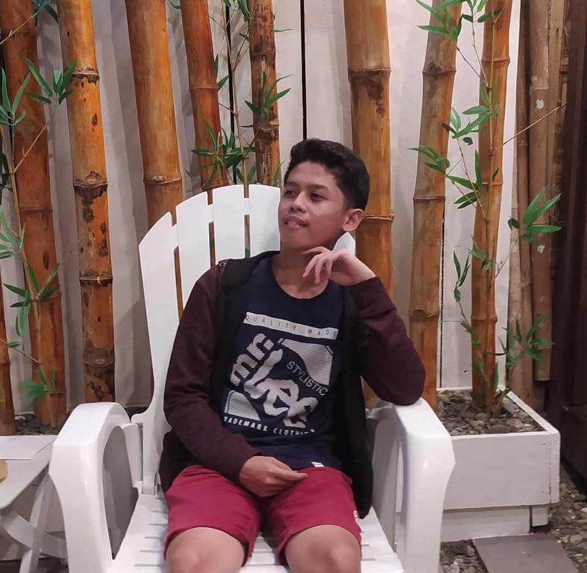

Contact
- Email: ybanez.heinzclarkjoshua@dnsc.edu.ph
- Location: Mahayahay Village, Nabunturan, Davao de Oro, Philippines

BSIT Student
Future IT Professional | Web Developer | Game Developer
My name is Heinz Clark Joshua M. Ybañez, a 1st year BSIT student at Davao Del Norte State College (DNSC). I still have a lot to learn, but my goal is to become a skilled game developer and web developer someday who creates systems that solve real-world problems. I am passionate about technology and programming, and I am always eager to learn new skills and improve my abilities.
A console-based note-taking app built in Java using JOptionPane.
A website that tracks student attendance. — designed to reduce the use of paper as a medium for recording attendance.
A library system that tracks book borrowing, due dates, and borrower records — replacing manual logbooks with a digital workflow.